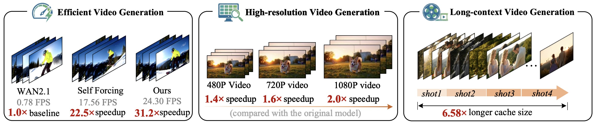
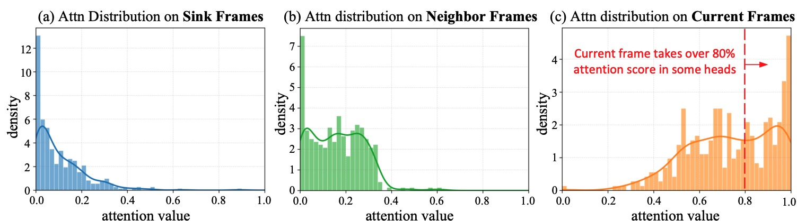
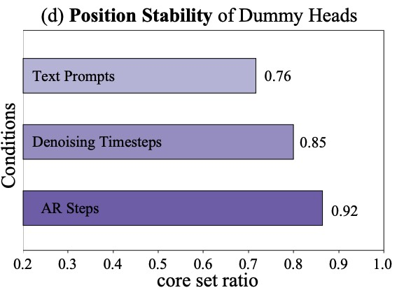
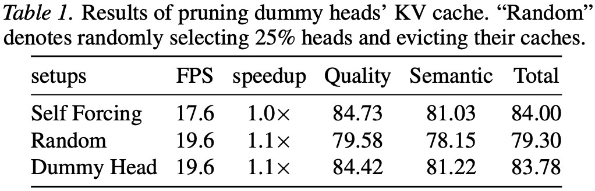

A simple yet effective KV cache pruning method for 24FPS+ video generation
Overview
Highlights

The proposed method can be applied to (1) efficiently generate videos, (2) overcome quadratic complexity in high-resolution video generation, and (3) scale cache lengths without increasing computational overhead.
Key Findings
1️⃣ Certain heads under-utilize past context

About 25% heads assign over 80% attention score to current frames, and we call these heads as "dummy heads"
2️⃣ Dummy head exhibits position stability

The dummy head index exhibits strong stability acorss varying conditions, e.g., prompts, AR steps, and denoising times.
3️⃣ Pruning cache of dummy heads incurs only slight drop

Removing all KV cache of these dummy heads incurs only slightly performance drop while delivering speedup.
Generation Results
1️⃣ 5-second Short Video Generation
Self Forcing - 17.6FPS
Ours - 24.3FPS (1.4x speedup)
A cheerful and playful Corgi running and frolicking in a sunlit park during the golden hour of sunset. The Corgi has a fluffy tail and perky ears, wagging happily as it runs through the grassy field. The sky is painted with warm hues of orange and pink, casting a soft glow over the greenery. In the background, there are families enjoying their leisure time, children playing, and couples walking hand in hand. Medium shot capturing the joyful energy of the Corgi amidst the serene park atmosphere.
A dynamic snowboarding sequence set against a stunning winter landscape. A young, athletic snowboarder performs an impressive trick mid-air, showcasing their skills with fluid movements and exhilarating speed. The boarder is dressed in vibrant snow gear, including a neon jacket and helmet. The background highlights a snowy mountain slope with pine trees and a clear blue sky above. The camera follows the action from a low-angle perspective, capturing the thrill and momentum of the snowboarding run. Medium shot focusing on the snowboarder during the jump.
A high-speed action scene featuring a sleek black motorcycle accelerating down a winding asphalt road. The motorcycle's engine roars as it gains speed, smoke trailing from the tires. The rider, wearing a black leather jacket and helmet, leans forward with intense focus. The background shows blurred trees and distant hills, emphasizing the speed. The camera follows the motorcycle closely, capturing every detail of the bike and rider as they accelerate. Close-up shot, dynamic camera movement tracking the motorcycle.
A dynamic and intense scene of two medieval knights engaging in sword fighting in a spacious, dimly lit arena. Both knights are fully armored with shining steel plate armor and wield large, ornate swords. They move gracefully yet powerfully, their swords clashing with sparks flying. One knight has a determined look, while the other appears focused and alert. The background includes spectators in period clothing, cheering from the stands, and banners hanging from the walls. The camera captures the action in a close-up, following the swift movements and dramatic swings of the swords.
A playful polar bear is strumming a guitar in a snowy wilderness. The polar bear is standing upright, holding the guitar with its front paws, while its large, fluffy body contrasts against the pristine white snow. The bear's expressive face shows concentration and joy as it plays. Surrounding the bear are tall, snow-covered trees and a frozen lake with cracks in the ice. The scene is bathed in soft, warm sunlight, creating a serene and magical atmosphere. Close-up view focusing on the bear's face and paws interacting with the guitar.
A dramatic and intense scene featuring an erupting volcano. The volcano is spewing lava and ash into the air, creating a vivid orange glow against a dark night sky filled with billowing smoke clouds. The ground trembles as molten rock flows down the sides of the volcano, lighting up the surrounding landscape. In the foreground, a few scattered trees and rocks are illuminated by the fiery eruption. The camera remains fixed on the volcano, capturing the powerful motion and scale of the event. Nighttime, wide shot.
A high-definition, cinematic scene featuring Tony Stark as Iron Man soaring through the sky. He is clad in his iconic gold and red armored suit, which gleams under the sunlight. His arms are extended slightly forward as he flies, showcasing the intricate design and glowing arc reactor on his chest. The sky is a vivid mix of blue and orange hues, suggesting a sunset. In the background, there are distant skyscrapers and clouds, emphasizing the urban setting. Iron Man's face is partially obscured by his helmet visor, but his determined expression can be seen. The scene is captured in a medium shot, maintaining a steady camera angle as Iron Man continues to fly gracefully.
In a stunning high-definition landscape, snow-covered rocky mountain peaks surround deep, shadowed canyons that twist and bend through the elevated terrain. The snow blankets the rugged rocks, creating a pristine, icy expanse. The camera begins at a wide angle, capturing the vastness of the mountains and then gradually zooms in to focus on the intricate patterns of the snow-covered cliffs and the dramatic twists and bends of the canyons below. Close-up shots highlight the textures of the frozen rock and the contrast between the white snow and the dark shadows.
2️⃣ 30-second Long Video Generation
LongLive - 17.6FPS
Ours - 24.3FPS (1.4x speedup)
A bicycle accelerating to gain speed, captured in a smooth time-lapse sequence. The bicycle is a classic red road bike with sleek aerodynamic handlebars and reflective wheels. The rider, a focused individual in cycling gear, leans forward, pedaling vigorously. The background shows a winding asphalt road leading into a forest, with trees and bushes blurring past as the bike speeds up. The camera starts from a mid-shot and gradually zooms in to focus on the rider's determined face and the spinning wheels, emphasizing the acceleration.
A subtle and elegant photograph in a Japanese style, capturing a woman with gentle, contemplative eyes and flowing dark hair sitting by the window of a high-speed train. The train moves rapidly through a bustling cityscape, with blurred reflections of the city lights and buildings on the window pane. The woman appears serene, her hands resting gently on her lap. The background features a blend of traditional Japanese architecture and modern skyscrapers, with a soft, muted color palette. The photo has a vintage film texture, emphasizing the movement and energy of the scene. A medium shot from a slightly angled perspective, highlighting the woman's thoughtful gaze and the dynamic motion of the train.
A dynamic tracking shot in the style of a classic Hollywood film, capturing a steam locomotive chugging through a snowy landscape. The train moves forward with a sense of urgency, the camera following closely behind to highlight the speed and power of the journey. Snowflakes swirl around the train, creating a sense of movement and cold. The scenery changes rapidly, revealing dense forests, winding tracks, and distant mountains covered in snow. The background features blurred snow-covered trees and distant hills, with patches of sunlight breaking through the clouds. The train’s smokestack releases billowing steam, adding to the dramatic effect. A wide-angle lens captures the expansive view, emphasizing the vastness of the snowy wilderness.
3️⃣ High-resolution Video Generation
Dummy Forcing supports 720P and even 1080P video generation with up to 2.0x speedup. The following are 1080P high-resolution videos generated with our method.
A cinematic scene from a classic western movie, featuring a rugged man riding a powerful horse through the vast Gobi Desert at sunset. The man, dressed in a dusty cowboy hat and a worn leather jacket, reins tightly on the horse's neck as he gallops across the golden sands. The sun sets dramatically behind them, casting long shadows and warm hues across the landscape. The background is filled with rolling dunes and sparse, rocky outcrops, emphasizing the harsh beauty of the desert. A dynamic wide shot from a low angle, capturing both the man and the expansive desert vista.
A dramatic post-apocalyptic scene in the style of a horror film, featuring a skeleton wearing a colorful flower hat and oversized sunglasses dancing wildly in a sunlit meadow at sunset. The skeleton has a weathered and somewhat decayed appearance, with bones visible through tattered remnants of clothing. The dance is energetic and almost comical, with exaggerated movements. The background is a vivid blend of warm oranges and pinks, with tall grasses and wildflowers swaying in the breeze. The sky is painted with rich hues of orange and pink, casting long shadows across the landscape. A dynamic medium shot from a low angle, capturing the skeleton's animated dance.
A dynamic action scene in a modern gym, featuring a kangaroo wearing boxing gloves, engaged in an intense sparring session with a punching bag. The kangaroo has a muscular build and is positioned mid-punch, its front legs wrapped in red boxing gloves, eyes focused intently on the target. The background showcases a cluttered gym with heavy equipment and mats, creating a vivid and realistic setting. The kangaroo's movements are fluid and powerful, conveying both agility and strength. The scene captures a split-second moment of mid-action, with the kangaroo's tail swaying behind it. A high-angle shot emphasizing the kangaroo's dynamic pose and the surrounding gym environment.
4️⃣ Long-context Video Generation
To evaluate the model's long-context memory, we employ an "A->B->A" shot transition, where we aim for the third shot to accurately reproduce the identity of the first shot. We generate 15-second videos, with each shot corresponding to 5 seconds. Benefiting from longer context memory, our method enables identity-consistent generation across shots. See our paper for more details.
LongLive
Ours (6.58x longer context window)
Click to expand text prompts
Prompt 1: A cheerful, happy Corgi playing in a futuristic park during sunset, set in a cyberpunk style. The Corgi has a playful expression, wagging its tail and running around in the grass. The park is illuminated by neon lights and surrounded by towering skyscrapers with holographic advertisements flashing on their surfaces. The sky is a blend of orange and purple hues, creating a striking contrast against the dark cityscape. The Corgi is in the foreground, while the vibrant city lights and buildings create a dynamic background. The scene captures the essence of a cyberpunk world with natural elements intertwined. Medium close-up shot focusing on the Corgi's joyful playfulness. The camera angle is slightly elevated, providing a clear view of the Corgi and the surrounding environment.
Prompt 2: A bustling street market at night in a futuristic city. Vendors sell exotic foods and gadgets under the glow of colorful neon signs. Shoppers navigate through narrow, crowded alleys filled with the sounds of chatter and the smells of street food. Holographic advertisements float above the stalls, and drones zip through the air delivering packages. The street is lit by a mix of warm and cool lights, creating a vibrant and lively atmosphere. The scene captures the energy and diversity of a cyberpunk marketplace. Wide shot showing the bustling crowd and the detailed environment.
Prompt 3: A cheerful, happy Corgi playing in a futuristic park during sunset, set in a cyberpunk style. The Corgi has a playful expression, wagging its tail and running around in the grass. The park is illuminated by neon lights and surrounded by towering skyscrapers with holographic advertisements flashing on their surfaces. The sky is a blend of orange and purple hues, creating a striking contrast against the dark cityscape. The Corgi is in the foreground, while the vibrant city lights and buildings create a dynamic background. The scene captures the essence of a cyberpunk world with natural elements intertwined. Medium close-up shot focusing on the Corgi's joyful playfulness. The camera angle is slightly elevated, providing a clear view of the Corgi and the surrounding environment.
Click to expand text prompts
Prompt 1: A close-up shot of a middle-aged man carefully counting a large pile of cash on a wooden table. He has a focused expression, running his fingers methodically through the bills. His face shows concentration, with slight creases forming around his eyes as he counts each dollar. The lighting is soft, casting gentle shadows on the table and highlighting the texture of the money. The background is blurred but shows a simple, modest home interior. The man continues to count the money steadily, occasionally glancing up as if checking for accuracy. Medium close-up, static shot.
Prompt 2: A panoramic view of a bustling city park on a sunny afternoon. People of all ages are enjoying the day, some playing frisbee, others sitting on benches, and children running around. The sky is clear blue, with a few fluffy clouds. The park is filled with tall trees, their leaves rustling in the gentle breeze. A small pond with ducks adds to the serene atmosphere. The camera slowly pans across the scene, capturing the vibrant energy and peaceful moments of the park.
Prompt 3: A close-up shot of a middle-aged man carefully counting a large pile of cash on a wooden table. He has a focused expression, running his fingers methodically through the bills. His face shows concentration, with slight creases forming around his eyes as he counts each dollar. The lighting is soft, casting gentle shadows on the table and highlighting the texture of the money. The background is blurred but shows a simple, modest home interior. The man continues to count the money steadily, occasionally glancing up as if checking for accuracy. Medium close-up, static shot.
Click to expand text prompts
Prompt 1: A cheerful, happy Corgi playing in a futuristic park during sunset, set in a cyberpunk style. The Corgi has a playful expression, wagging its tail and running around in the grass. The park is illuminated by neon lights and surrounded by towering skyscrapers with holographic advertisements flashing on their surfaces. The sky is a blend of orange and purple hues, creating a striking contrast against the dark cityscape. The Corgi is in the foreground, while the vibrant city lights and buildings create a dynamic background. The scene captures the essence of a cyberpunk world with natural elements intertwined. Medium close-up shot focusing on the Corgi's joyful playfulness. The camera angle is slightly elevated, providing a clear view of the Corgi and the surrounding environment.
Prompt 2: A bustling street market at night in a futuristic city. Vendors sell exotic foods and gadgets under the glow of colorful neon signs. Shoppers navigate through narrow, crowded alleys filled with the sounds of chatter and the smells of street food. Holographic advertisements float above the stalls, and drones zip through the air delivering packages. The street is lit by a mix of warm and cool lights, creating a vibrant and lively atmosphere. The scene captures the energy and diversity of a cyberpunk marketplace. Wide shot showing the bustling crowd and the detailed environment.
Prompt 3: A cheerful, happy Corgi playing in a futuristic park during sunset, set in a cyberpunk style. The Corgi has a playful expression, wagging its tail and running around in the grass. The park is illuminated by neon lights and surrounded by towering skyscrapers with holographic advertisements flashing on their surfaces. The sky is a blend of orange and purple hues, creating a striking contrast against the dark cityscape. The Corgi is in the foreground, while the vibrant city lights and buildings create a dynamic background. The scene captures the essence of a cyberpunk world with natural elements intertwined. Medium close-up shot focusing on the Corgi's joyful playfulness. The camera angle is slightly elevated, providing a clear view of the Corgi and the surrounding environment.
Citation
Please cite us if our work is useful for your research.
@article{guo2026efficient,
title={Efficient Autoregressive Video Diffusion with Dummy Head},
author={Guo, Hang and Jia, Zhaoyang and Li, Jiahao and Li, Bin and Cai, Yuanhao and Wang, Jiangshan and Li, Yawei and Lu, Yan},
journal={arXiv preprint arXiv:2601.20499},
year={2026}
}